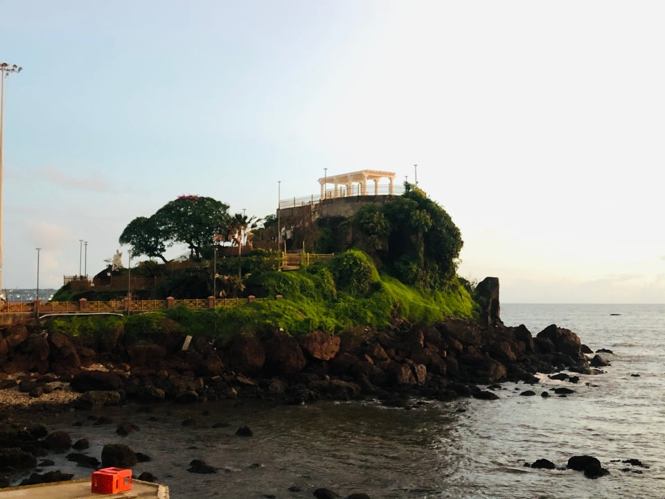

HOME
DONA PAULA BEACH

Dona Paula beach is located just about 7-km from Panaji. This place is called the Lovers Paradise in Goa, named after Dona Paula de Menezes. A myth has been attached to this place and according one legend the Viceroy's daughter after facing objections from her family about her love affair with a poor fisherman jumped of the cliff.
The enticing story is about a girl named Dona Paula de Menzes, after whom the Goa beach has been named. She was the daughter of a viceroy in colonial India, who threw herself off the cliff, when refused permission to marry a local fisherman, Gaspar Dias.
Another legend says that punished for captivating Francisco de Tavora- the Count of Alvor with her charm, the Viceroy's daughter was pushed off a cliff to drown in the waters below. Her irrepressible spirit still continues to haunt every visitor with legends of her lovers. She is even supposed to have been seen emerging from moonlit waves wearing only a pearl necklace.
The place where two of Goa's famous rivers meet the Arabian Sea is the bay of Dona Paula with a very good view of the Marmagao Harbour. 7-km from Panjim, situated on the south side of the, hammer-shaped headland that divides the Zuari and Mandovi, is a fishing village. This is a spot to sunbathe and relax. Jet skiing is a very common sport at this beach.
Tranquil and blue, Dona Paula unravels the ultimate in aquatic sport and fun. The Dona Paula Sports Club at Dona Paula offers some of the best water sports facilities to the sports enthusiasts including Water-scooter rides, Motor-boat rides, etc. Dona Paula is also famous for the Salim Ali Bird Sanctuary, where you can spot both migratory and local birds.
Goa Dona Paula beach associated with a romantic myth, is one of the hottest tourist spot in Goa. People flock to the Dona Paula beach not only to enjoy the sun and the sea but also to indulge in water sports on the clear waters. The Dona Paula Beach offers an opportunity to the tourists to have sunbath and buy cheap seaside goods from local vendors.
The beauty of Goa Dona Paula beach has been enhanced by a poky past which has the tourists thronging to this place. History goes that the beach is named after Dona Paula de Menses, daughter of a viceroy (in colonial India) who threw herself off the cliff, when refused permission to marry a local fisherman, Gaspar Dias. The beach has also been the location for many Indian movies. Given this dual attraction, Dona Paula Beach has become popular among the tourist spots in Goa.